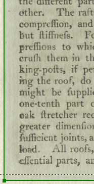
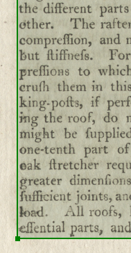

Draw Boxes
Manually creating text recognition boxes improves accuracy
While ABBYY FineReader can automatically create text boxes when you click the Analyse Page icon, it is often quicker and more accurate to create them by hand.
The key to clean OCR is to crop boxes tightly. They should come as close as possible to the type column without clipping it. Boxes with large borders capture extraneous marks on the page that add false characters to the text data.
Figure: Box boundaries: Wrong  |
Figure: Box boundaries: Right  |
Important: Save your work often using every 15 minutes or so. This ensures that you do not have to redo your
work in the event of a computer problem.